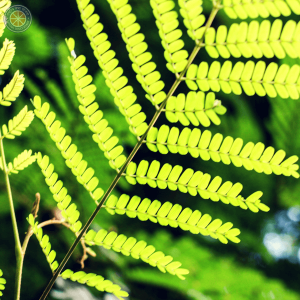
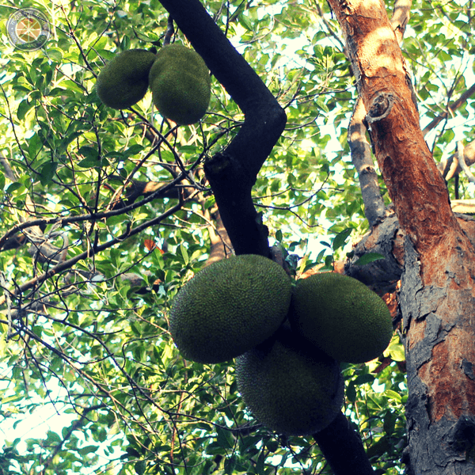
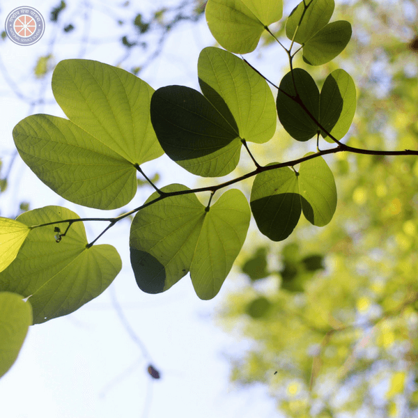
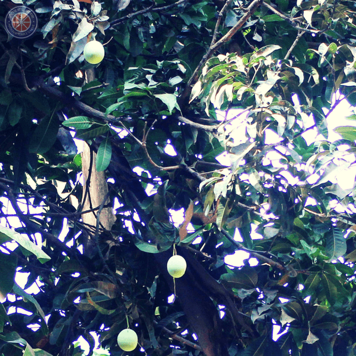
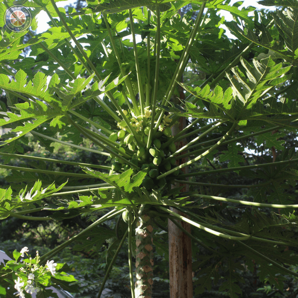
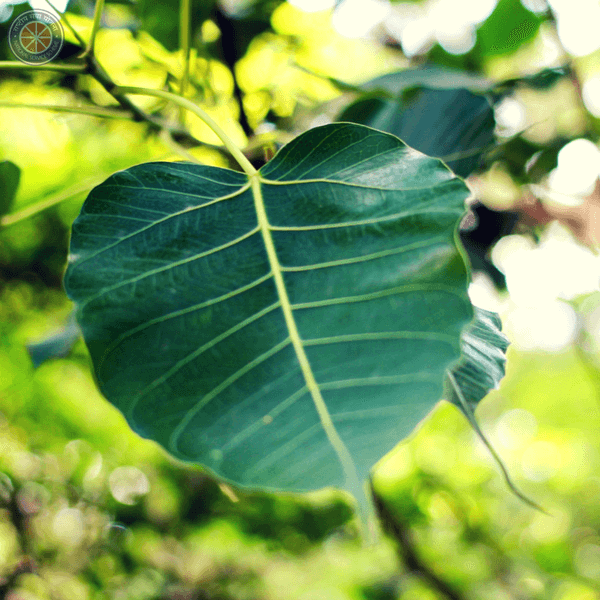
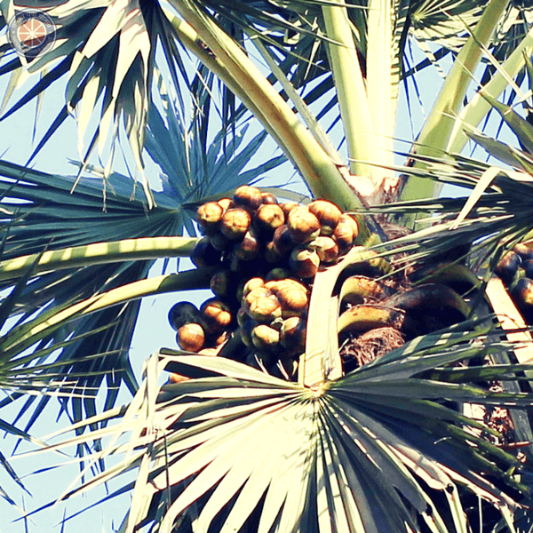

| Amaltas | |
|---|---|
| Common Name | Amaltas |
| Scientific Name | Cassia fistula |
| Size of Tree | Big |
| Type | Deciduous |
| Bark | grey, smooth to slightly ridged and slender, darker grey-brown when mature |
| Leaves | smooth, ovate shape, hairy below, alternate, pinnate, and deciduous, with 3-8 pairs of leaflets, range from 15-60 cm, leaflet ranging from 7-15 cm |
| Pods | legume, pendulous, cylindrical, and brown in color, 20 to 60 cm, brown to purple-black pods |
| Flowers | bright yellow in color, from pendulous 20 to 40 cm, five yellow petals of equal size and shape |
| Fruit | contains approximately 30 -100 large hard flat, round seeds. |
| A medium sized deciduous tree, with an oval to rounded shape, 5 to 15 meter in height and 5 to 10 meter wide. It is well known for its impressive yellow flowers that cover the entire canopy. They usually drop their leaves in April and flowers appear mainly from March to July. Also during flowering their leaves are absent. Location: H15 Bus stop / Near DRDO building. | |
| Asopalav | |
|---|---|
| Common Names | False ashoka, Buddha tree, Indian mast tree, Debadaru, Nettilinkam |
| Scientific Name | Polyalthia Longifolia |
| Size of tree | Big |
| Type | Evergreen |
| Bark | Cracked, rectangular bark, removable for trees older than 10 years |
| Leaves | They are shaped like a lance and have wavy edges.Fresh leaves are in coppery brown color, becomes light green and finally becomes dark green |
| Flowers | delicate star-like pale green flowers, last for a short period, not conspicuous due to their color |
| Fruits | Small, round, born in clusters of 10-20, initially green but turning purple or black when ripe |
| A lofty evergreen tree, native to India, commonly planted due to its effectiveness in alleviating noise pollution. It exhibits symmetrical pyramidal growth with willowy weeping pendulous branches and long narrow lanceolate leaves with undulate margins. It is sometimes incorrectly identified as the ashoka tree (Saraca indica) because of the close resemblance of both trees. The tree remains green throughout year, as the spring comes it flowers and ripen as summer progresses. The fruits are loved by birds such as the Asian koel, Eudynamys scolopaceus. Location: Entrances of many hostels eg:H9 , Passage between Civil department and Main building. | |
| Banana | |
|---|---|
| Common Names | Kela, Vaazha, Laphoo tharo, Vaazha |
| Scientific Name | Musa acuminata |
| Size of Tree | Small |
| Leaves | It is composed of a "stalk" (petiole) and a blade (lamina). The base of the petiole widens to form a sheath. |
| Flowers | Female flowers appear in rows further up the stem from the rows of male flowers. The ovary is inferior, meaning that the tiny petals and other flower parts appear at the tip of the ovary. |
| Fruit | Elongated and curved, 3 inches to a hand span |
| All the above-ground parts of a banana plant grow from a structure usually called a "corm". Plants are normally tall and fairly sturdy, but what appears to be a trunk is actually a "false stem" or pseudostem. Grows in soil at least 60 cm deep, has good drainage and is not compacted. It is a versatile plant and can grow in any season. Flowers and fruit appears as plant matures. It is the largest herb in the world! Location: NSS nursery. | |
| Banyan | |
|---|---|
| Common Names | Bargad, Vatavrikhsa, vad, Aalada Mara, Peraal |
| Scientific Name | Ficus urostigma |
| Size of Tree | Humongous |
| Type | Evergreen |
| Bark | Hard, thick, smooth, no plates and greyish in colour |
| Leaves | large, leathery, glossy, green, and elliptical, leaf bud is covered by two large scales |
| Flowers | It is concealed in the fleshy receptacle commonly known as ‘fig’ which grow in pairs in the leaf axils |
| Fruits | multiple fruit(syncarps), round, red in colour |
| A huge shelter tree, begins its life as a plant that grows on another plant, when its seed germinates in a crack or crevice of a host tree or human edifice. It’s fruits ripens in between February to May. Older banyan trees are characterized by aerial prop roots that mature into thick, woody trunks. Location: At the centre of lecture hall complex, Padmavati temple,In front of H8. | |
| Bitti | |
|---|---|
| Common Name | Peeli Kaner, Yellow Oleander |
| Scientific Name | Thevetia peruviana |
| Size of Tree | small (tropical shrub) |
| Type | Evergreen |
| Bark | Its stem is green turning silver/gray as it ages. |
| Leaves | It is willow-like, linear-lanceolate, and glossy green in color. They are covered in waxy coating to reduce water loss. |
| Flower | It is yellow in color, long and funnel-shaped. They grow in few-flowered terminal clusters. |
| Fruit | It is deep red-black in color encasing a large seed. |
| An evergreen tropical shrub or small tree. It is a poisonous plant native to central and southern Mexico and Central America, and cultivated widely as an ornamental. The evergreen tree, flowers during summers. The tree is poisonous. It is drought tolerant and is cultivated as an ornamental plant. Location: Tea point near Sunrise Dhaba. | |
| Bottle Palm | |
|---|---|
| Common Name | Bottle Palm |
| Scientific Name | Roystonea regia |
| Size of Tree | Large and tall |
| Type | Evergreen |
| Bark | Smooth trunk |
| Leaves | It is pinnate and smooth, leaf scars noticeable |
| Flower | It has white petals and pink anthers. |
| Fruit | They are green when immature, turning red and eventually purplish-black as they mature. |
| Large palm which reaches a height of 20–30 m. The trunk is stout, very smooth and grey-white in color with a characteristic bulge below a distinctive green crownshaft. Trees have about 15 leaves which can be up to 4 m long. They are native to Florida and Central America. They are mainly grown as ornamental plants. Blooms in early summer. The naturally condensed water droplets of this tree flow down the trunk from the leaves to reach the roots, it is an amazing example of nature's engineering powers. Also its flowers are so fragrant that they can be smelt from over a fifty feet away. Location: Main road connecting main gate and main building. | |

| Coconut Tree | |
|---|---|
| Common Name | Coconut tree |
| Scientific Name | Cocos nucifera |
| Size of Tree | Large |
| Type | Evergreen |
| Bark | Smooth trunk |
| Leaves | Pinnate leaves 4-6 m long having pinnae 60-90 cm long. |
| Flowers | The palm produces both the female and male flowers on the same inflorescence; thus, the palm is monoecious. The female flower is much larger than the male flower. |
| Fruit | The coconut fruit is a drupe. The exocarp and mesocarp make the husk. The fruits contain a large amount of coconut water. The cellular layers of endosperm deposit on the walls as 'coconut flesh'. A single coconut weighs about 1.44 kg. |
| A large palm growing up to 30 m tall. Coconuts are generally classified into two general types: tall and dwarf. On fertile soil, a tall coconut palm tree can yield up to 75 fruits per year. Coconut palms produce their first fruit in six to ten years, taking 15 – 20 years to reach peak production. Old leaves break away from time to time and flowering occurs continuously. The coconut tree is called the 'Tree of Life' due to its variety of uses. The oil and milk derived from it are commonly used in cooking and frying, as well as in soaps and cosmetics. Location:Road connecting Civil and Mechanical department . | |

| Copper Pod Tree | |
|---|---|
| Common Name | Yellow flame tree |
| Scientific Name | Peltophorum pterocarpum |
| Size of Tree | Big |
| Type | Deciduous |
| Bark | Deeply cracked and flaky |
| Leaves | There are two rows of leaflets on opposite sides of a central axis (bipinnate), each axis is 30-60 cm long containing 16-20 leaflets. Each leaflet has 20-40 oval leaves. |
| Flowers | Flowers are yellow and small in size. They grow in large clusters. |
| Fruit | It is basically a pod. Red initially, then turns black on ripening. Contains 1-4 seeds. |
| It is a deciduous tree growing 15-25 m tall. It has a flaky rough bark. It is native to tropical southeast Asia and is mainly grown as an ornamental tree. The wood of this tree has various uses, including making cabinets and colors for dyeing cloth. The blooming season is February-March. The tree begins to flower after 4 years. The most striking feature of this tree is the yellow carpet of flowers that forms under it in spring. It is also known as yellow-flame tree for its yellow flowers. Location: In front of NCC ground main gate. | |
| Gulmohar | |
|---|---|
| Common Names | Gold mohr, flamboyant, royal poinciana, flame tree, peacock tree |
| Scientific Name | Delonix regia |
| Size of Tree | Big: Height 5 – 12 m (18–40 ft) Spread 3.5 - 5 m (12-18 ft) |
| Type | Deciduous |
| Bark | Tall, unbranched trunk.The bark is smooth, pale grey and often creased at branch forks. |
| Leaves | The leaves are compound and feather-like (twice-divided or bipinnate). Each leaf is made of between 10 and 25 pairs of pinnae, with each pinna having 16-30 oppositely arranged leaflets. A mature leaf could have between 1500 and 2500 leaflets. |
| Bark | Tall, unbranched trunk.The bark is smooth, pale grey and often creased at branch forks. |
| Flower | They are arranged in loose terminal clusters, are large (~10 cm across) and bright red (or orange) in colour. The sepals are fleshy and green on the outside but crimson on the inner side. Petals are separate and distinct (not fused into a tube as in Jacaranda). Out of five petals one is larger and has a prominent white-to-creamy-yellow blotch. The other four are crimson. There are 10 stamens surrounding the pistil. |
| Pod | They are long (30-70 cm), strap-shaped and flattened, containing up to 50 seeds each. Initially fruits are leathery, but become woody, turning reddish brown to almost black when ripe. It is not uncommon to see the previous year’s fruits still hanging on the tree with the current 7 year’s flowers. Seeds are dark brown, slightly elongated to rod-shaped, smooth with hard seed coats and streaked. They are neatly arranged linearly within the fruit. |
| The plant has several medicinal uses like it is used to treat constipation, inflammations, arthritis and hemiphlagia. New leaves appear by late March or early April.Its original home in Madagascar, it is one of the most extensively cultivated trees in tropical and subtropical regions across the world. This popular shade and showy ornamental tree was probably introduced into India around 1840 near Mumbai from Mauritius.The popularity of gul mohar is confirmed by the fact that several countries have brought out commemorative postage stamps in honour of the tree.Eg: Republic of Congo,Anguilla,Republic of China,USA,Cuba. Location: Backside of Library, near gulmohor cafeteria etc. | |

| Jackfruit | |
|---|---|
| Common Name | Katahal,Phanas |
| Scientific Name | Artocarpus heterophyllus |
| Size of Tree | Big |
| Type | Evergreen |
| Bark | The colour of the bark of the tree is grey-brown and rough. The cut bark of Jackfruit trees produces a milky juice. |
| Leaves | The simple, alternately arranged leaves (10 to 15 cm long and 5 to 8 cm wide) are glossy dark green, thick, and leathery. The petioles (leaf stalks) are stout and 1 to 2 cm long. Leaf blades have entire margins and may be oblong to oval or narrow. |
| Spines | Present. Male spikes are found on younger branches .The yellowish green fleshy club-shaped male flower spike is borne on a stalk 5 to 10 cm long. |
| Flowers | Male and female flowers are borne on the same individual trees ,but in separate enlarged, fleshy flower clusters that sprout from older branches and from the trunk. Each female flower has a tubular hairy calyx, a pistil with a 1-celled 1-ovuled ovary, a slender style, and a broader yellow stigma. In a tree, both female and male flowers grow separately. They are not noticeable amongst the leaves when in bud. The female flowers remains making groups together in large spiny heads straight on the trunk or limbs. |
| Fruit | It may be 8-to 3 ft long and 6-20 ft in wide, and the weight ranges from 10-50 kg. The 'rind' or exterior of the compound or aggregate fruit is green or yellow when ripe and composed of numerous hard, cone-like points attached to a thick and rubbery, pale yellow or whitish wall. The interior consists of large "bulbs" of yellow, banana-flavored flesh, massed among narrow ribbons of thin, tough undeveloped perianths, and a central, pithy core. Each bulb encloses a smooth, oval, light-brown "seed" covered by a thin white membrane. There may be 100 or up to 500 seeds in a single fruit. |
| Fruits of jackfruit tree and hang from the branches, from the trunk and even on the roots of older trees. The rapidly growing tree has variation in its size depending upon the characteristics of soil. It grows high and spreads well in the sandy soil.The flowers of the tree normally appear in the months of February and March.In the Northern Hemisphere, the fruiting season is mainly late spring to early fall (March to September), especially the summer. A few fruits mature in winter or early spring. The fruit can produce rubber.. A fomentation obtained from the leaves can be applied to the injuries and their juice can relieve the puffiness of the glands. Jackfruit is grown commercially and is perhaps the most widespread and economically important Artocarpus species, both providing fruit and functioning as a visual screen and ornamental. Location: Padmavati temple, In hostels eg: H9,H4,H2 | |
| Jamun | |
|---|---|
| Common name | plum,indian blackberry,jambul,black plum |
| Scientific name | Syzygium cumini |
| Size of tree | Big |
| Type | Evergreen |
| Leaves | The leaves which have an aroma similar to turpentine, are pinkish when young, changing to a leathery, glossy dark green with a yellow midrib as they mature. The leaves are used as food for livestock, as they have good nutritional value |
| Flowers | Flowers are fragrant and small, about 5 mm in diameter. |
| Fruit | The fruit is oblong, ovoid. Unripe fruit looks green. As it matures, its color changes to pink, then to shining crimson red and finally to black color. A variant of the tree produces white coloured fruit. The fruit has a combination of sweet, mildly sour and astringent flavour and tends to colour the tongue purple. |
| Jamun tree thrives best in the dry areas. Since Jamun is a hard fruit, it can be grown under adverse soil and environment. It seeks dry weather at the time of flowering and fruit setting. Early rain is good for better growth, development and ripening of fruit. Young plants are susceptible to frost Jamun trees start flowering from March to April.The fruits develop by May or June and resemble large berries.According to Hindu tradition, Lord Rama subsisted on the fruit in the forest for 14 years during his exile from Ayodhya. Because of this, many Hindus regard Jamun as a 'fruit of the gods, ' especially in Gujarat, India, where it is known locally as jamboon.Jamun fruit works miraculously in diabetes. It is wonderful medicine for the sufferers of hyperglycemia. The jamun fruit is rich in iron and richness of iron makes it a natural blood purifier as it ensures proper blood supply of oxygenated blood throughout body Location: Backside of H10,inside NSS nursery, near gulmohor cafeteria etc. | |

| Kanchan | |
|---|---|
| Common names | Orchid tree, camel's foot tree, kachnar and mountain-ebony |
| Scientific name | Bauhinia variegata |
| Size of tree | Small |
| Type | Deciduous |
| Leaves | The leaves are 10-20 centimetres (3.9-7.9 in) obcordate shaped, long and broad, rounded, and bilobed at the base and apex. Leaves are bi-lobed with minute stipules, ovate to circular, 10-13 nerved and upper surface of leaves are glabrous. Leaves of the plant are just like camel's hoof print. |
| Flowers | Flowers are conspicuous, bright pink or white, 8-12 centimetres (3.1-4.7 in) diameter, with five petals. |
| Fruits | The fruit is a pod 15-30 centimetres (5.9-11.8 in) long, containing several seeds. |
| Kachnar is closely related to peacock flower and Kachnar tree is considered as beautiful tree in world when it blooms. It is ornamental tree with beautiful and scented flowers. Leaves, flowers and flower buds are eaten as vegetable.Kachnar is native to India and china. The flowers often make their first appearance in late winter while the tree is bare of leaves. The blooming period then lasts until early summer.This is a very popular ornamental tree in subtropical and tropical climates, grown for its scented flowers.A postal stamp was issued by the Indian Postal Department to commemorate this tree. Location: In front of NCC ground main gate ,in front of new SAC. | |
| Katesawar | |
|---|---|
| Common name | Red silk-cotton; red cotton tree,silk cotton or kapok |
| Scientific name | Bombax ceiba |
| Size of tree | Big |
| Type | Deciduous |
| Bark | Its trunk bears spikes to deter attacks |
| Leaves | The leaves are palmate with about 6 leaflets radiating from a central point (tip of petiole), an average of 7~10 centimeters wide, 13~15 centimeters in length. The leaf's long flexible petiole is up to 20 cm long. |
| Spines | Bear numerous conical spines particularly when young, but get eroded when older |
| Fruits | Ball like structure, full of cotton-like fibrous stuff.The fruit, which reaches an average of 13 centimeters in length, is light-green in color in immature fruits, brown in mature fruits. |
| This Asian tropical tree has a straight tall tree and its leaves are deciduous in winter. Red flowers with 5 petals appear in the spring before the new foliage. It’s seeds are numerous, long, ovoid, black or gray in colour and packed in white cotton. It bears beautiful red-colored flowers during January to March.The cotton fibers of this tree can be seen floating in the wind around the time of early May. A cotton-substance called 'kopak' is extracted from the semul fruit and this is used for filling economically priced pillows, quilts, sofas etc. Location: In front of H6. | |

| Khajur | |
|---|---|
| Common names | Silver Date Palm ,Sugar Date Palm, Wild Date Palm |
| Scientific name | Pheonix sylvestris |
| Size of tree | Big: Tall(upto 50 feet) |
| Type | Evergreen |
| Bark | There is a triangular or diamond looking scar left on the trunk giving it a similar appearance to a pineapple skin. |
| Leaves | Leaves are pinnately compound and blue-green, and they can grow to 10 feet in length. Leaflets can reach approximately 18 inches long and grow opposite to one another on the rachis in such a way that the entire leaf looks flat |
| Spines | Specialized leaflets converted into tough pointed pins which may vary from very short to up to 20 cm in length and from very thin to 1 cm in width. |
| Flowers | The inflorescence grows to 1 metre with white, unisexual flowers forming to a large, pendent infructescence. |
| Fruits | Elongated oval-cylindrical shape. They are 3 to 7 cm long and 2 to 3 cm in diameter. Each fruit has one seed of about 2 cm long and 6 to 8 mm in diameter. Depending on the variety, the unripe fruits have a bright red to bright yellow color. Date fruits are very sweet as they have a high sugar content of around 80%. |
| The flowering season of this plant is observed to be from the first to the third week of August.The fruits take almost one year for attaining maturity. The ripening starts from the first week of June and continues till the middle of July.In India, sugar and alcohol are made from wild date palm flowers and jelly is made from the fruit. Young trunks bear triangular shaped leaf scars that become more diamond-shaped with age. On older trees, aerial roots tend to be present at the base of the trunk. Yellow inflorescences can reach lengths of 3 feet, are heavily branched, bear small white blossoms, and grow among the leaves. Location:Near H8 / Bus depot. | |
| Lemon Tree | |
|---|---|
| Common name | Nimbu |
| Scientific name | Citrus limon |
| Size of tree | Small (15-20 ft) |
| Type | Evergreen |
| Bark | Narrow trunk |
| Leaves | Toothed, pointed, elliptical or lanceolate leaves |
| Spines | Sharp thorns lining the twigs,have varying amounts of thorns, depending on the variety.If allowed to grow, these can cut production, as they drain the energy from more desirable branches |
| Flowers | White inside and rosy at the margin of the petals |
| Fruits | Fruit is a hesperidium till 12.5 cm wide, with a thick rind , dark yellow when fully ripe |
| Once your lemon tree begins fruiting, it consistently produces fruit every year under ideal climate and soil conditions. Each cultivar fruits during different seasons, but the majority are ready for harvesting between summer and winter. Producing fruit takes four to 12 months once the tree starts blossoming .The tree has a spreading, upright growth habit, few large branches and stiff thorns reaching full fruit bearing capacity in approximately 40 years. Lemon often is selected for its pleasant, crisp and clean scent .Lemon may also be referred to as bush lemon or Persian apple and likely originated from the eastern Himalaya of India. | |

| Mango | |
|---|---|
| Common name | Mangot, Manga, Mangou. |
| Scientific name | Mangifeera indica |
| Size of tree | Large:Tall (35-40m) |
| Type | Semi-evergreen |
| Bark | Grey-brown with shallow cracks |
| Leaves | Slender with a long tapering apex,bluntly pointed with wavy edges, alternate, leathery,The young leaves are red, aging to shiny dark green above, lighter below, with yellow or white venation. |
| Flowers | Yellowish or reddish flowers which appear at branch terminals,in dense panicles of up to 2000 minute flowers |
| Fruits | 2 to 9 inches long, kidney shaped, range in size from 8 ounce to 24 ounce, quality of the fruit is based on the scarcity of fiber and minimal turpentine taste. |
| Once your Mango tree begins fruiting, it consistently produces fruit every year under ideal climate and soil conditions. Each cultivar fruits during different seasons, but the majority are ready for harvesting between summer and winter. Producing fruit takes four to 12 months once the tree starts blossoming .Mango trees are deep-rooted,. Most of the flowers function as males by providing pollen, but some are bisexual and set fruit. Mango basically require a frost-free climate. Flowers and small fruit can be killed if temperatures drop below 40 Farhenheit, even for a short period. The mango must have warm, dry weather to set fruit. Location: Inside many hostels. | |
| Neem | |
|---|---|
| Common name | Neem,Indian Lilac |
| Scientific name | Azadirachta indica |
| Size of tree | Medium (15-20 meters ) |
| Type | Evergreen |
| Bark | They sheds off having its outer surface peeled in large strips. |
| Leaves | They are about 6 to 15 cm long and covered with a blue-grey, waxy bloom. The mature leaves are narrow, sickle-shaped and dark shining green. |
| Flowers | The cream-coloured flowers are borne singly in the leaf axils and produce copious nectar that yields a strongly flavoured honey. |
| Fruits | The fruits are woody and range from 1.5–2.5 cm (0.59–0.98 in) in diameter. |
| Neem is a tall evergreen tree with the small bright green leaves. It has a straight trunk.The branches are wide and spreading. The fairly dense crown is roundish and may reach a diameter of15/20metres.Blossoms in spring with the small white flowers.Each part of neem is used in the medicines. Neem oil extracted from its seeds is used in medicines, pest control and cosmetics etc.It is very bitter with garlic/sulfur smell. Its leaves are used in the treatment of Chickenpox. Location: Behind H15 near basketball court. | |
| Nilgiri | |
|---|---|
| Common name | Blue Gum Tree, Stringy Bark Tree, Tasmanian bluegum, Southern blue-gum or simply blue gum |
| Scientific name | Eucalyptus globulus |
| Size of tree | Large |
| Type | Evergreen |
| Bark | They sheds off having its outer surface peeled in large strips. |
| Leaves | They are about 6 to 15 cm long and covered with a blue-grey, waxy bloom. The mature leaves are narrow, sickle-shaped and dark shining green. |
| Flowers | The cream-coloured flowers are borne singly in the leaf axils and produce copious nectar that yields a strongly flavoured honey. |
| Fruits | The fruits are woody and range from 1.5–2.5 cm (0.59–0.98 in) in diameter. |
| It is one of the most widely cultivated trees native to Australia..The leaves are steam distilled to extract eucalyptus oil.Their flowers are considered a good source of nectar and pollen for bees.Their flowers flourish from September to December . Seed capsules persist on trees until at least the following summer.Seeds start to germinate in about 5 days if grown at 25°C with no pretreatment required.The primary product from the Eucalyptus globulus is its essential oil, which has a diverse range of therapeutic uses.This oil has a popular decongestant remedy for upper respiratory infections and inflammatory infections, such as bronchitis. Location:In front of new SAC. | |

| Papaya | |
|---|---|
| Common Name | Papaya |
| Scientific Name | Carica papaya |
| Size of Tree | Large |
| Type | Evergreen |
| Bark | The lower trunk is conspicuously scarred where leaves and fruit were borne. |
| Leaves | Large, 50-70 cm (20-28 in) in diameter, deeply palmately lobed, with seven lobes. |
| Flowers | 5-parted and highly dimorphic. They are sweet-scented, open at night and are moth-pollinated |
| Fruit | The fruit is a large berry about 15-45 cm (5.9-17.7 in) long and 10–30 cm (3.9-11.8 in) in diameter |
| The papaya is a small, sparsely branched tree, with spirally arranged leaves confined to the top of the trunk.Papayas, which are high in vitamins A and C and calcium, are often used fresh in fruit salads and desserts, as well as prepared in juices and jams or dried. Papaya is the name for the large, juicy, melon-like, edible fruit of this tree, which has black seeds in the center and typically ranges in color from an amber to a yellow hue. Location: Near Lecture Hall Complex | |
| Paperflower | |
|---|---|
| Common Name | Paperflower |
| Scientific Name | Bougainvillea glabra |
| Size of Tree | Medium sized |
| Type | Evergreen |
| Bark | The woody trunk tends to be twisted and the thin stem has sharp thorns and dark green leaves |
| Spines | The sharp thorns are tipped with a black, waxy substance |
| Flowers | 0.4 cm in diameter (the pink petal-like structures are not petals, but bracts.) |
| It is a climbing shrub with thorny stems.Tiny white flowers usually appear in clusters surrounded by colorful papery bracts, hence the name paperflower.They tend to flower all year round in equatorial regions. Elsewhere, they are seasonal, with bloom cycles typically four to six weeks. But the real flowers are tucked away inside the papery bracts from summer to autumn.This tree is heat and drought tolerant and frost sensitive.If unsupported, these plants will remain compact or behave as ground covers, while if given support they will climb vigorously, using their sharp thorns as a means of attachment. They are ornamental trees. Location: In front of H10 main gate. | |

| Peepal | |
|---|---|
| Common Name | Peepal |
| Scientific Name | Ficus religiosa |
| Size | Tall |
| Type | Semi Evergreen |
| Bark | Light grey in colour and peels off easily in patches. |
| Leaves | Cordate in shape with a distinctive extended drip tip; they are 10-17 cm long and 8-12 cm broad, with a 6-10 cm petiole. |
| According to Ayurvedic system of medicine,Peepal tree is well known to be useful in diabetes.The various parts of the plants like stem bark, fruits, buds, latex are used in treatment of different diseases like dysentery, mumps, jaundice, heart diseases.The tree fruits in summer and the fruits get ripened by rainy season.The tree is considered sacred by the followers of Hinduism, Jainism and Buddhism.Gautama Buddha is said to attain enlightenment (bodhi) while meditating underneath a peepal tree.The leaves of this tree move continuously even when the air around is still and no perceptible wind is blowing. This phenomenon can be explained due to the long leaf stalk and the broad leaf structure. Location: In front of Convocation hall. | |
| Peru | |
|---|---|
| Common Name | Guava |
| Scientific Name | Psidium guyava |
| Size | Small |
| Type | Evergreen |
| Bark | The older stems are covered in a smooth, light reddish-brown, bark that peels off in flakes. This sometimes gives the trunks a mottled appearance, because the newly revealed bark is somewhat greenish-brown in colour. Younger stems are greenish in colour, hairy (pubescent), and somewhat four-angled (quadrangular). |
| Leaves | The leaf blades (7-15 cm long and 3-7 cm wide) are somewhat oval in shape (ovate-elliptic or oblong-elliptic) with rounded or pointed tips (obtuse or acute apices) and rounded (obtuse) bases. |
| Guavas are primarily self-fruitful, although some strains seem to produce more fruit when cross-pollinated with another variety. Guavas can bloom throughout the year in mild-winter areas, but the heaviest bloom occurs with the onset of warm weather in the spring. The exact time can vary from year to year depending on weather.It is native to the Caribbean, Central America and South America.It is easily pollinated by insects, mainly by the common honey bee, Apis mellifera.The plant is used in many different shampoo products for its scent. It is also becoming a popular bonsai species and is currently quite popular in India and Eastern Asia. Location: Inside many hostels. | |
| Rain Tree | |
|---|---|
| Common Name | Monkey Pod |
| Scientific Name | Albizia saman |
| Size | Very large |
| Type | Semi deciduous |
| Bark | The bark of mature trees is gray,rough and fissured in long plates and corky ridges. On younger trees the bark is smoother and paler gray to brownish in color. |
| Pods | Mature pods are black-brown , oblong, lumpy, 10-20 cm long, straight or slightly curved |
| Leaves | Leaves are alternately arranged along twigs and have a prominent swelling at the petiole base ; stipules are present and threadlike |
| The leaves fold in rainy weather and in the evening, hence the name "rain tree" .Rain tree has a distinctive, umbrella-shaped crown. The crown is typically broad and domed. Under plantation , the crown is more vase shaped.It is an evergreen tree while it sheds it's leaves in dry periods.There are several folk remedies prepared from various parts of rain tree. The boiled bark is applied to cure constipation, inner bark and fresh leaves is used for diarrhea while the roots are made into a hot bath for stomach cancer. Location: Nearly everywhere in institute. | |
| Sandpaper Tree | |
|---|---|
| Common Name | Sandpaper Tree |
| Scientific Name | Streblus asper |
| Size | Medium-sized |
| Type | Evergreen |
| Bark | Bark is rough grey to greenish in colour |
| Leaves | The leaves are 2 to 4 inches long, rigid, oval-shaped, irregularly toothed, and borne on small petioles. |
| Flowers | Flowers are dioecious. Males heads are globose, minute and yellowish-green in colour. Female flowers are very small, solitary or 2-4 together. |
| Fruit | Fruit a berry, 1 seeded, pea sized, yellow when ripe, succulent, loosely enclosed in the large persistent periant. Seeds smooth, round and greenish white. |
| The fruits are sweet and are eaten. Tender leaves are lopped and used as a fodder for cattle and elephants. The twigs are chewed to make brushes and are said to cure pyorrhea.Latex of this plant possesses astringent and antiseptic properties and is applied to sore heels, chapped hands and glandular swellings.Seeds are said to be useful in piles and diarrhea. A paste of seeds is applied in Leucoderma.It flowers from January to March.The leaves of E. anacua are the sole food source of the Texas tortoise beetle. Location: H14 entrance. | |
| Shisham | |
|---|---|
| Common Name | North Indian Rosewood, biradi, and sisau |
| Scientific Name | Dalbergia Sissoo |
| Size | Large |
| Type | Deciduous |
| Bark | Young shoots are downy and drooping; established stems with light brown to dark gray bark to 2.5 cm thick, shed in narrow strips. |
| Leaves | Leaves are leathery, alternate, pinnately compound and about 15 cm (5.9 in) long. |
| Pods | Pods are oblong, flat, thin, strap-like 4-8 cm (1.6-3.1 in) long, 1 cm (0.39 in) wide and light brown. |
| Flowers | Flowers are whitish to pink, fragrant, nearly sessile, up to 1.5 cm long and in dense clusters 5-10 cm in length. |
| Fruits | The fruit is brown and pod like in shape. The fruit is dry and hard. |
| Shisham is mostly propagated through the root suckers and seeds. It requires fertile well drained soil. It is the important fuel wood and is also used for shade and shelter. Its wood is used for the making furniture, musical instruments and carvings. Its oil is used in perfumes. It flowers from October to February and seeds are germinated in three weeks. Many people grow Rosewood because they believe harvesting the wood denudes the rain forests. Location: At kresit entrance from main road | |
| Saptaparni | |
|---|---|
| Common Name | blackboard tree, devil tree, ditabark, milkwood-pine, white cheesewood |
| Scientific Name | Alstonia Scholaris |
| Size of Tree | Large |
| Type | Semi-deciduous(as loses its leaves) in periods while evergreen in moister climates. |
| Bark | Leaves |
| Leaves | Leaves |
| Flowers | Small, fragrant, greenish white, in umbellate, branched many - flowered, pubescent capitate cyme, peduncles 2.5 - 5 cm long, pedicels very short, bracts oblong, pubescent. |
| Fruits | Follicles 30 - 60 cm long and 0.3 cm in diameter, cylindrical, pendulous in clusters, become completely averted after dehiscence. |
| Saptaparna is a medium-to-large evergreen tree with a dense crown and a straight cylindrical bole and with bitter milky juice, glabrous except inflorescence.The tree is often planted as an avenue plant and as ornamental in gardens.The bark is used for treating asthma and heart ailments, fever and diarrhea. The fruits are bitter in taste and are used as medicine against intestinal worms.Flowering time is between December - March while fruiting time is around May - July. The tree is avoided by the animals because of its poisonous nature and hence is called Devil's Tree. Location: In front of Library. | |

| Taad | |
|---|---|
| Common Name | doub palm, palmyra palm, tala palm, toddy palm or wine palm |
| Scientific Name | Borassus flabellifer |
| Size of Tree | tall tree having nearly straight trunk with lenght almost 20 to 40 metres in length |
| Type | Evergreen |
| Bark | Kite-shaped structure of bark which is lifted off from trunk |
| Leaves | Leaves having 20 to 40 pairs of smalll leaflets at the end of main leaf.The stem of the leaves has thorny edges . Fences can be prepared from these stems by nailing them together.The leaves are fan-shaped and 3 m (9.8 ft) long, with robust black teeth on the petiole margins. |
| Spines | Spines exist on taad, 3 to 5 cm in length and brownish white in color. |
| Pods | Brownish color pods which looks lie snail. |
| Flowers | Yellow in color.They have male and female flowers seperately.The male flowers are less than 1 cm long and form semi-circular clusters, which are hidden beneath scale-like bracts within the catkin-like inflorescences. In contrast, the female flowers are golfball-sized and solitary, sitting upon the surface of the inflorescence axis. After pollination, these blooms develop into fleshy fruits 15-25 cm wide, each containing 1-3 seeds. |
| Fruits | The fruit measures 10 cm (3.9 in) to 18 cm (7.1 in) in diameter, has a black husk, and is borne in clusters. The jelly part of the fruit is covered with a thin, yellowish-brown skin. These are known to contain watery fluid inside the fleshy white body. |
| Fruits occur mainly in the summer from December to May ,still we can see fruit and flowers in any other season one can get nutritious content from its fruit.Its fruit is used for make sap(a drink)which is very helpful for us in summer.It is called 'neera', and is commonly available on Pune-Mumbai highway. Location: Behind kresit. | |